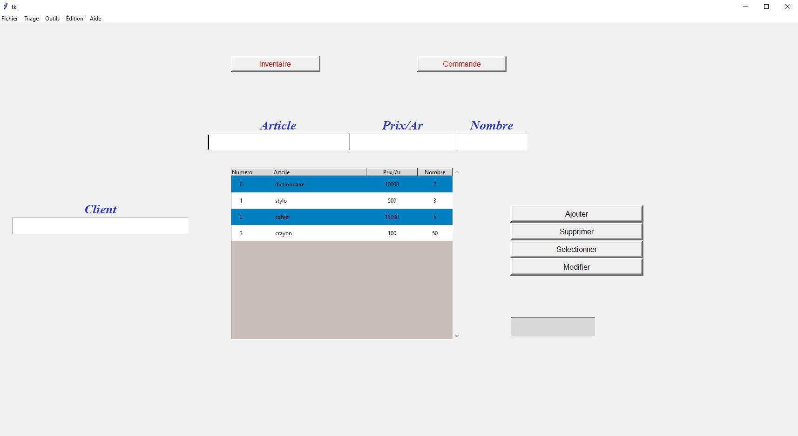
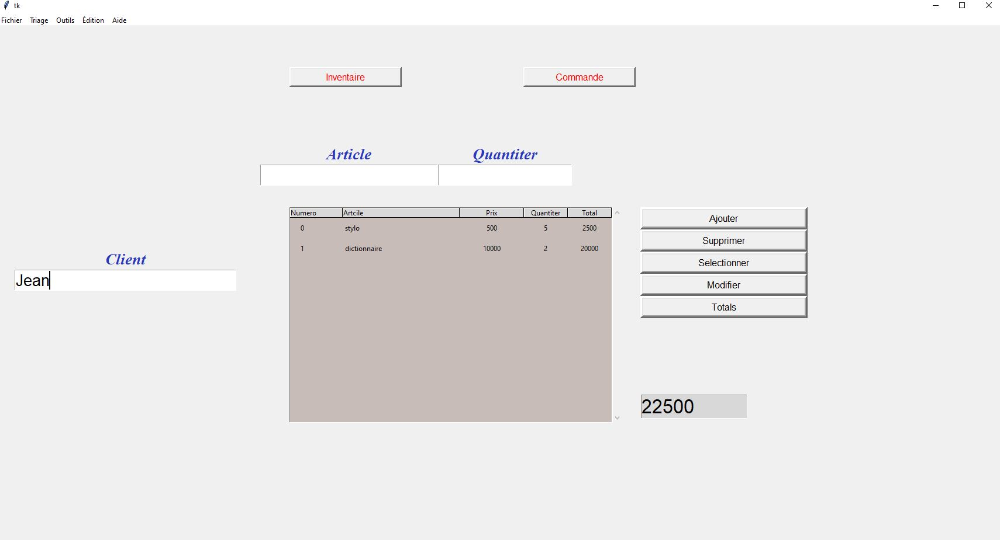
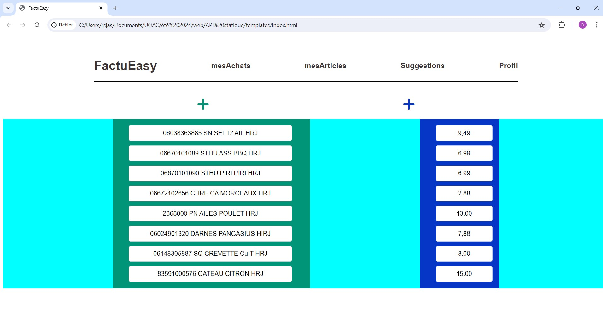
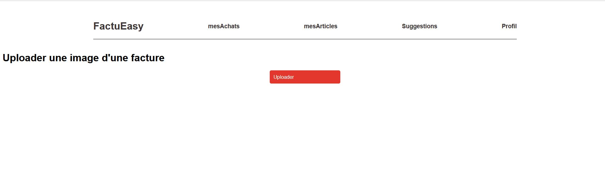

Sales software
Difficulté:5/10
Ce projet est mon tout premier. Il est développé en Python et utilise la bibliothèque graphique Tkinter. L'objectif de ce projet est de créer un logiciel de vente capable de gérer la facturation et de sauvegarder les produits dans une base de données. À l'époque, ma mère tenait une épicerie et utilisait Excel pour la gestion de ses factures et de son inventaire. J'ai donc voulu lui simplifier la vie en créant ce logiciel.
 Technologie: Python, sqlite
LienBattlefield
Difficulté:6/10
Comme son nom l'indique, ce projet est une version du célèbre jeu Battlefield, où les joueurs s'affrontent à tour de rôle en tirant des missiles sur les cases pour essayer de couler les bateaux adverses. Il s'agit d'un projet web utilisant l'API WebSocket avec du JavaScript.
Technologie: HTML, CSS, Javascript
LienCheval de Troie
Difficulté:7/10
Ce programme est une simulation du cheval de Troie. Lorsqu'il est exécuté par la cible, le programme se connecte directement à l'ordinateur hôte, permettant à ce dernier d'exécuter des commandes batch sur l'ordinateur cible et de recevoir les réponses. Il est important de noter que ce programme est développé uniquement pour comprendre le fonctionnement d'un cheval de Troie et des réseaux, et non dans le but de nuire à quelqu'un. Il est écrit en C++ et utilise des sockets pour la communication.

Technologie: C++
LienGestion des déchets
Difficulté:7/10
Ce projet simule la gestion des déchets d’un établissement, depuis la collecte et le tri jusqu’à la transformation. Le code est entièrement écrit en suivant le paradigme orienté objet.


Technologie: C++
LienTask motivation
Difficulté:6/10
Ceci est ma toute première application mobile. Il s'agit d'une application de to-do list avec une fonctionnalité supplémentaire où chaque tâche accomplie rapporte des points de compétences. Elle est écrite en Java avec l'aide de l'environnement de développement Android Studio et de son SDK.


Technologie: Java, XML, sqlite
LienApi achat en ligne
Difficulté:7/10
L'API "Achat en ligne" est une API Web écrite en Python utilisant le framework Flask. Elle simule l'achat en ligne, permettant la consultation des produits, l'ajout au panier et le paiement. Cette API gère les routes, la communication avec la base de données, les réponses à retourner et la gestion des erreurs.


Technologie:Python, Docker, postgresql, Flask, Peewee
LienFactuEasy
Difficulté:9/10
Ce projet est ma réalisation la plus importante à ce jour. Il s'agit d'une application web où l'on téléverse une facture, qui est ensuite transformée en texte. Seules les parties pertinentes de la facture, c'est-à-dire les articles et les prix, sont extraites. Ce projet fusionne à la fois le développement d'une application web (frontend et backend) et l'intelligence artificielle (reconnaissance d'image et traitement de texte).
 Technologie:Python, Docker, postgresql, Flask, Peewee, TensorFlow, Kubernetes
Lien